COPYRIGHT Tim Lovett © Aug 2004
.
.
.
Rod Walsh. Geelong - near Melbourne Australia.
email: rod@noahs-ark.net
web: http://www.pastornet.net.au/noahsark/index.htm
Rod has built several replicas in balsa wood with removable roof to show internal layout. The hull features in AiG images. Rod has also produced a video and cardboard models for sale.
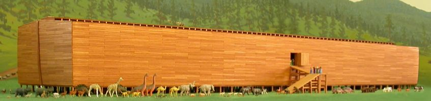
Note the slight curvature (bulge) in the side walls. A central deck 2 entry door. Virtually rectangular hull profile.
Rod's latest Noah's Ark trailer (October 2004).
Rod travels with his ark display and gives talks in churches, schools, fairs and interested groups. (Click on an image to enlarge)
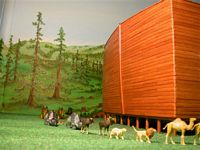 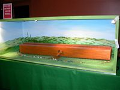 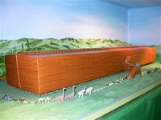 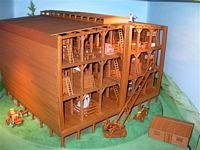
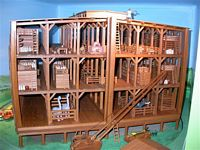 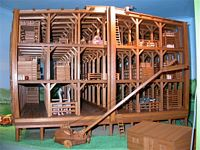 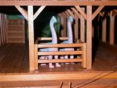 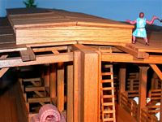
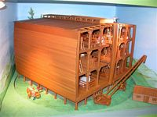 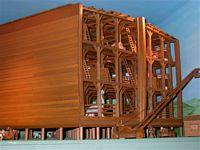 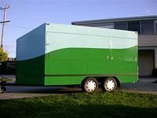
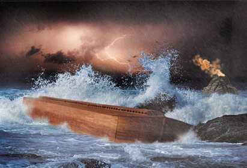
Composite image. Answers in Genesis.
More: http://www.answersingenesis.org/docs/4198cen_d1999.asp
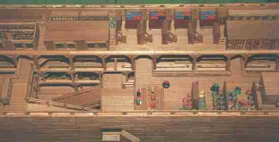
Image of Rod Walsh's ark showing the floor access ramps and entry door. Note the double skinned hull wall blocked with timber, almost 1m thick. Rod's interior design is very open plan with a wide central light shaft running full length.
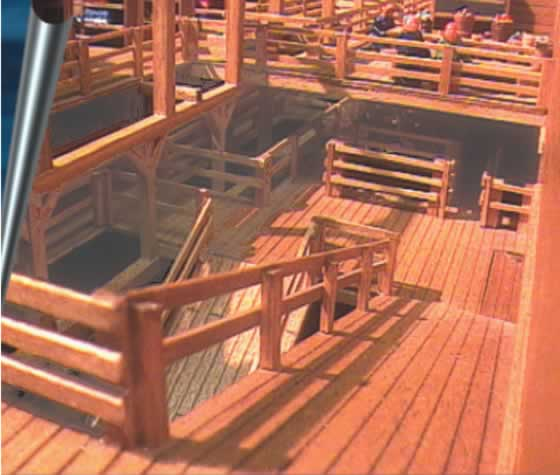
Image from the video Noah's Ark and the flood that changed the world. A minature video camera was used to show what it might have been like on board the ark.
http://www.pastornet.net.au/noahsark/video.htm
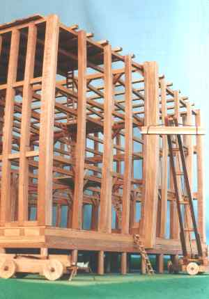
Rod's construction model. A larger scale representation of a portion of the ark showing a possible structural arrangement and mobile crane. If those beams looked a little curved, it's not camera distortion. Rod applied a slight camber to the vertical sides of the hull.